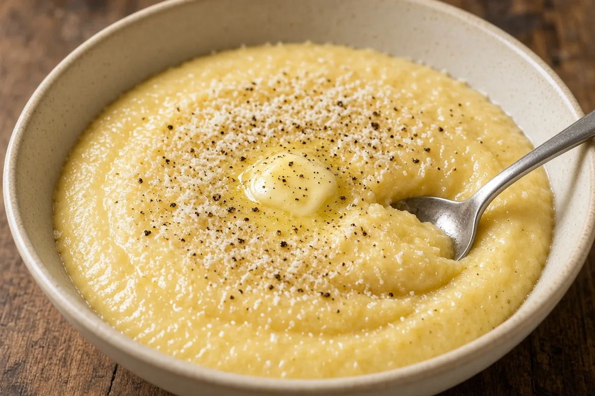

Creamy Polenta
Slow-simmered polenta finished with butter and Parmesan, soft enough to pool under sliced short ribs or a roast.

8 servings
By
Yield: 8 servings
Prep:
Cook:
Total:
Difficulty: Easy
Ingredients
- 4 cups chicken broth
- 2 cups whole milk
- 1 tsp kosher salt, plus more to taste
- 1 1/2 cups coarse polenta, or yellow cornmeal
- 4 Tbsp butter
- 1 cup Parmesan cheese, grated
- 1/2 tsp black pepper, plus more to taste
Instructions
- In a 4-quart HexClad saucepan, bring the chicken broth, whole milk, and kosher salt to a gentle simmer over medium heat.
- Whisk the pot as you rain in the polenta in a slow stream, so it does not clump.
- Drop the heat to low and cook, stirring often with a wooden spoon, until the polenta is thick, creamy, and tender, 30 to 35 minutes. Stir more frequently in the last 10 minutes so it does not stick. If it gets thicker than you like before the grains are tender, stir in a splash of broth or milk.
- Take the pan off the heat and stir in the butter, Parmesan cheese, and black pepper. Taste and add more kosher salt if needed.
- Serve right away. Polenta firms as it sits; loosen leftovers with a splash of hot milk or broth over low heat.
Notes: This ratio is 1 1/2 cups polenta to 6 cups liquid, which stays creamy in a 4-quart saucepan. If you are using instant polenta, follow the package time (often about 5 minutes) and start with 5 cups liquid, then loosen or simmer as needed. Do not use sweet corn meal mix or corn muffin mix.